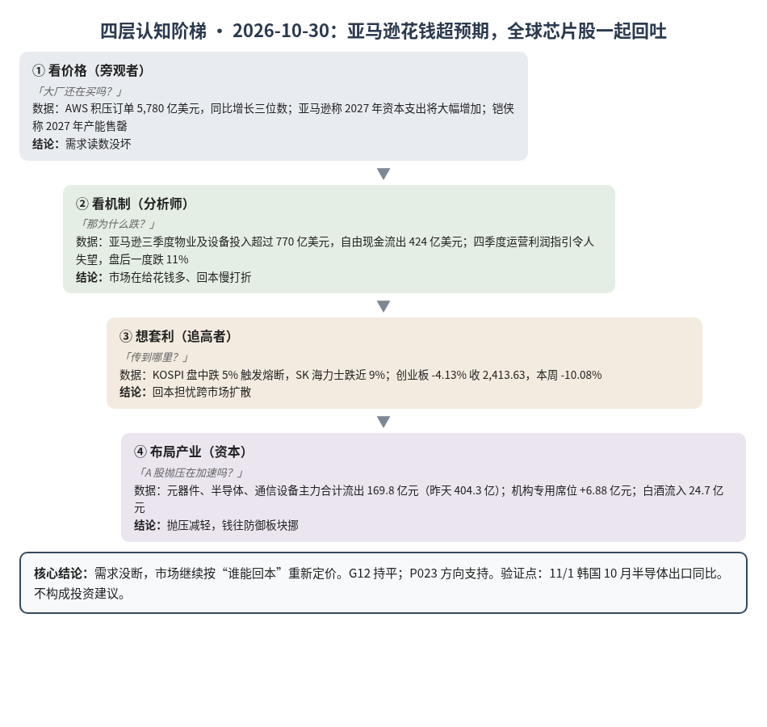
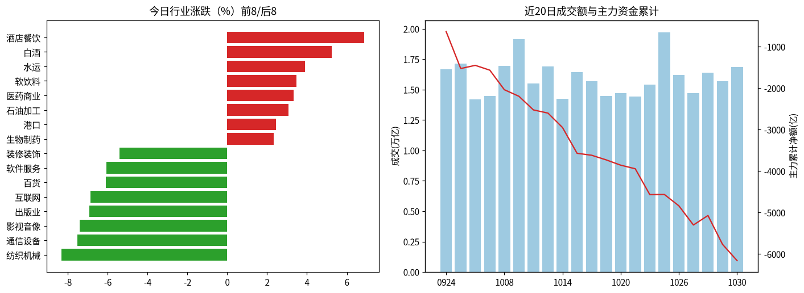
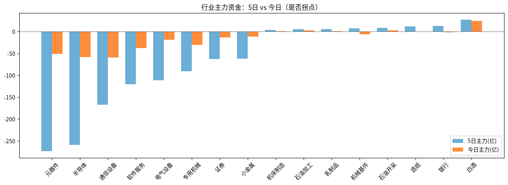

A股投研日报 · 2026-10-30（四层认知版）
- 主线
- 亚马逊越花越多、利润指引却偏弱，"回本"担忧从美股蔓延到韩国和 A 股
- 最重要变化点
- 创业板 -4.13% 收 2,413.63，跌破 2,500，本周累计 -10.08%；但元器件、半导体、通信设备主力合计流出降到 169.8 亿元（昨天 404.3 亿）
- 机制含义
- 需求读数仍强（AWS 积压订单 5,780 亿美元、铠侠称 2027 年产能售罄），跌的是估值：市场在给"花钱多、回本慢"打折
- 下一个观察点
- 11/1 韩国 10 月半导体出口同比：> +150% 则 P001 命中；低于 +100% 说明需求端开始降温
本报告为基于公开数据的研究分析，不构成投资建议。
今日市场概况
数据管道速览（Tushare 收盘数据，规则生成，正文判断见下文）
- 指数：上证指数 -1.44% 收 3,599.02，创业板指 -4.13% 收 2,413.63；深证成指 -2.73%、科创50 -5.48%、上证50 -0.75%、沪深300 -1.39%、中证500 -2.91%、中证1000 -3.41%（Tushare）。
- 量能与宽度：成交 16,877 亿元（20 日均 15,977 亿元）；上涨 893 家 / 下跌 4,602 家，上涨占比 16.0%，个股中位数 -3.1%。
- 主力资金：全 A 主力 -391.8 亿元，连续第 2 日净流出。
- 行业：主力流入居前 白酒（+24.7 亿）、生物制药（+11.1 亿）、化学制药（+6.8 亿）；流出居前 通信设备（-59.4 亿）、半导体（-58.8 亿）、元器件（-51.6 亿）。
- 龙虎榜 / 北向：机构专用席位合计 +6.88 亿元；沪深股通成交前五 中际旭创、新易盛、北方华创、宁德时代、贵州茅台（成交额≠净买入）。
变化点
方法：四层认知阶梯 + 历史周期律。数据 Tushare（见附录）。不构成投资建议。
一、世界观定位
阶段不变，回退条件不变。世界指标今日更新未跑完，五盏灯沿用 10/29 读数（4 黄 1 红，估值红）。美国 10 年期国债收益率跌到 4.92%，创 7 周新低（源）：钱在躲进国债，利率不是今天下跌的原因。
二、变化一：亚马逊"花钱超预期"，全球芯片股一起回吐
- 亚马逊：三季度物业及设备投入超过 770 亿美元，远高于预期，自由现金流出 424 亿美元（源）；四季度运营利润指引令人失望，盘后一度跌 11%（源）。同时 AWS 积压订单 5,780 亿美元，同比增长三位数（源），CEO 称 2027 年资本支出将"大幅增加"（源）。
- 连锁反应：KOSPI 盘中跌 5% 触发熔断，SK 海力士跌近 9%（源）；美股盘前戴尔跌 11.8%、超微跌 6%（源）。
- A 股：创业板跌破 2,500；三大硬件行业仍净流出，但比昨天少一半多；机构专用席位由 -15.60 亿元转为 +6.88 亿元，白酒净流入 24.7 亿元居首。
判断：亚马逊和昨天的谷歌是同一道题：订单和资本开支都在涨，利润和现金流跟不上，股价就跌。需求端没坏，G12 持平；四家里已有两家说 2027 年资本开支大幅增加，P023 方向支持。A 股这边，抛压在减轻、钱在往防御板块挪，更像"换锚"进入第二天而不是恐慌加速。漏洞：流出减少也可能只是筹码已经卖得差不多，不等于见底。
三、变化二：卖方继续喊"卖光了"
判断：存储（继海力士、三星之后）和服务器 CPU 卖方都说紧，定价权仍在卖方。股价跌、订单满，这种背离要靠 11/1 韩国出口来判谁对。
四、上一交易日验证点回顾（10/29 → 10/30）
| 验证点 | 结果 |
|---|---|
| 创业板收回 2,576.90 / 低于 2,500 | 命中后者：收 2,413.63，10/28 反弹完全失败 |
| 三大硬件行业合计流出超 200 亿元 | 未命中：169.8 亿，抛压减轻 |
| 11/1 韩国出口 > +150% | 待验证 |
| DDR5 现货单周跌超 3% | 待验证：今日 +0.27% |
五、供应链风险敞口（人工复核版）
脚本版见 risk_section_20261030.md。口径为 GB300/NVL72 当量柜年化系统价值；Δ$ 为事件类型假设模板，仅用于排序，非预测。脚本 6 条，误匹配 6 条（扩产、份额、评级、财报类新闻，无停产）。复核后有效断供 Δ$≈0，基线维持年化 EL 57.7 亿美元（10/21）。采集降级：GDELT 限流，巨潮公告匹配未恢复。
六、机会表（产业/环节层面，不构成投资建议）
| 环节 | 逻辑 | 证伪条件 |
|---|---|---|
| 存储（HBM/NAND） | 海力士、三星、铠侠都称 2027 售罄，定价权在卖方 | DDR5 现货单周跌超 3% |
| 云算力出租 | AWS 积压订单同比三位数增长，收入看得见 | AWS 增速跌破 35% |
中长期展望（3–12 个月与 2027）
3–12 个月：需求读数仍支持 G12、G25，但市场从"谁在买"转向"谁能回本"，估值灯仍红，硬件股波动会更大。卡脖子仍沿 HBM、封装、载板往下走（G19）。
2027：存储卖方集体称售罄，G01（2027 只略紧）仍受挑战，等 John 复核。总闸门仍是 P023（概率 0.55），本周读数偏支持。
什么会改变展望：①又一家大厂下调 2027 资本开支；②DDR5 现货单周跌超 3%；③10 年期美债重新站上 5%。
七、明日/本周验证点（可证伪）
- 11/1 韩国 10 月半导体出口同比 > +150%，P001 命中；低于 +100% 是降温信号。
- 11/2 创业板收回 2,500 则本周是一次性杀估值；再跌超 3% 说明还在出清。
- 11/2 三大硬件行业合计主力流出低于 100 亿元，抛压继续减轻。
- 11/5 前 DDR5 16Gb 现货单周跌超 3%，卖方定价权出裂缝。

一句话总结：亚马逊花钱超预期、利润指引偏弱，回本担忧扩散到韩国和 A 股。
本报告为基于公开数据的研究分析，不构成任何投资建议。
附录：市场数据（证据底稿）


| 收盘 | 今日% | 5日% | 20日% | MA20 | 成交(亿) | |
|---|---|---|---|---|---|---|
| 上证指数 | 3,599.02 | -1.44 | -2.48 | -7.44 | 3,735.83 | 7,642.27 |
| 深证成指 | 10,833.78 | -2.73 | -7.20 | -18.65 | 11,947.95 | 4,518.90 |
| 创业板指 | 2,413.63 | -4.13 | -10.08 | -26.61 | 2,801.79 | 1,847.13 |
| 科创50 | 1,160.84 | -5.48 | -13.73 | -28.43 | 1,371.36 | 703.74 |
| 上证50 | 2,742.11 | -0.75 | -0.56 | -3.54 | 2,776.68 | 1,329.28 |
| 沪深300 | 3,985.50 | -1.39 | -2.92 | -10.22 | 4,181.68 | 4,568.56 |
| 中证500 | 6,266.19 | -2.91 | -8.05 | -17.81 | 6,900.70 | 2,850.35 |
| 中证1000 | 6,161.23 | -3.41 | -8.51 | -18.61 | 6,812.88 | 3,384.45 |
行业资金热力（按5日主力净额排序，前8/后8）
| industry | 今日% | 5日% | 20日% | 今日主力(亿) | 5日主力(亿) | 资金连续天数 |
|---|---|---|---|---|---|---|
| 白酒 | 5.2 | 6.1 | 10.3 | 24.7 | 27.1 | 2.0 |
| 银行 | 0.5 | 5.3 | 7.8 | -2.1 | 12.8 | -2.0 |
| 造纸 | -0.6 | -0.6 | -7.3 | -0.3 | 12.1 | -1.0 |
| 石油开采 | 0.9 | 5.1 | 11.4 | 2.8 | 8.4 | 2.0 |
| 机械基件 | -3.7 | -4.1 | -8.3 | -5.8 | 7.2 | -1.0 |
| 乳制品 | 1.3 | 7.8 | 8.5 | 0.8 | 5.9 | 2.0 |
| 石油加工 | 3.1 | 5.9 | 15.5 | 3.0 | 5.6 | 3.0 |
| 机床制造 | -3.2 | 0.0 | -7.9 | 1.1 | 4.0 | 3.0 |
| 元器件 | -4.7 | -14.4 | -34.1 | -51.6 | -273.4 | -2.0 |
| 半导体 | -5.2 | -13.8 | -7.1 | -58.8 | -258.8 | -2.0 |
| 通信设备 | -7.5 | -18.7 | -41.1 | -59.4 | -167.5 | -2.0 |
| 软件服务 | -6.1 | -13.6 | -8.1 | -37.5 | -120.4 | -5.0 |
| 电气设备 | -2.4 | -5.9 | -16.3 | -18.4 | -111.3 | -5.0 |
| 专用机械 | -4.6 | -9.6 | -24.1 | -30.7 | -90.6 | -2.0 |
| 证券 | -1.6 | -7.0 | -11.1 | -13.6 | -62.8 | -5.0 |
| 小金属 | -2.2 | -8.4 | 23.4 | -11.5 | -62.0 | -15.0 |
市场情绪时间序列（近10日）
| trade_date | 成交(亿) | 上涨占比% | 主力净额(亿) | 个股中位涨跌% |
|---|---|---|---|---|
| 20261019 | 14487.9 | 40.9 | -111.4 | -0.4 |
| 20261020 | 14715.3 | 67.9 | -127.9 | 1.0 |
| 20261021 | 14420.6 | 35.6 | -86.3 | -0.4 |
| 20261022 | 15418.6 | 9.6 | -623.7 | -2.5 |
| 20261023 | 19728.5 | 81.2 | 4.3 | 1.6 |
| 20261026 | 16230.9 | 40.4 | -274.6 | -0.5 |
| 20261027 | 14729.0 | 10.9 | -462.7 | -3.0 |
| 20261028 | 16421.0 | 74.6 | 229.2 | 1.3 |
| 20261029 | 15707.1 | 14.0 | -694.9 | -2.6 |
| 20261030 | 16877.1 | 16.0 | -391.8 | -3.1 |
今日上涨893家/下跌4602家，涨幅≥9.8% 59家、跌幅≤-9.8% 189家¹。
龙虎榜侧写：机构专用席位合计 +6.88 亿；净买入居前 光洋股份(+3.14亿)、泸州老窖(+2.86亿)、西部材料(+2.06亿)，净卖出居前 超声电子(-1.90亿)、金安国纪(-0.68亿)、西部超导(-0.66亿)。 沪深股通活跃股：成交前五为中际旭创、新易盛、北方华创、宁德时代、贵州茅台（成交额≠净买入）。
注：¹涨跌停为按±9.8%阈值近似（limit_list_d无权限）。²行业为Tushare stock_basic分类自行聚合（sw_daily/ths_daily/行业资金流接口无权限），成交加权、剔除N/C新股，成分≥8只。³主力=大单+特大单净额（moneyflow）。⁴2024年8月起北向每日净买入停止披露，moneyflow_hsgt/hsgt_top10数值为成交口径，不可解读为净流入。⁵新闻/公告接口无权限，改用新浪财经7x24公开快讯自动抓取+人工补充。
接口状态：trade_cal:OK；stock_basic:OK；index_daily:OK；moneyflow_hsgt:OK；hsgt_top10:OK；top_list:OK；top_inst:OK；index_dailybasic:OK；新浪7x24(公开):OK 3993条（10-29 16:20 起）